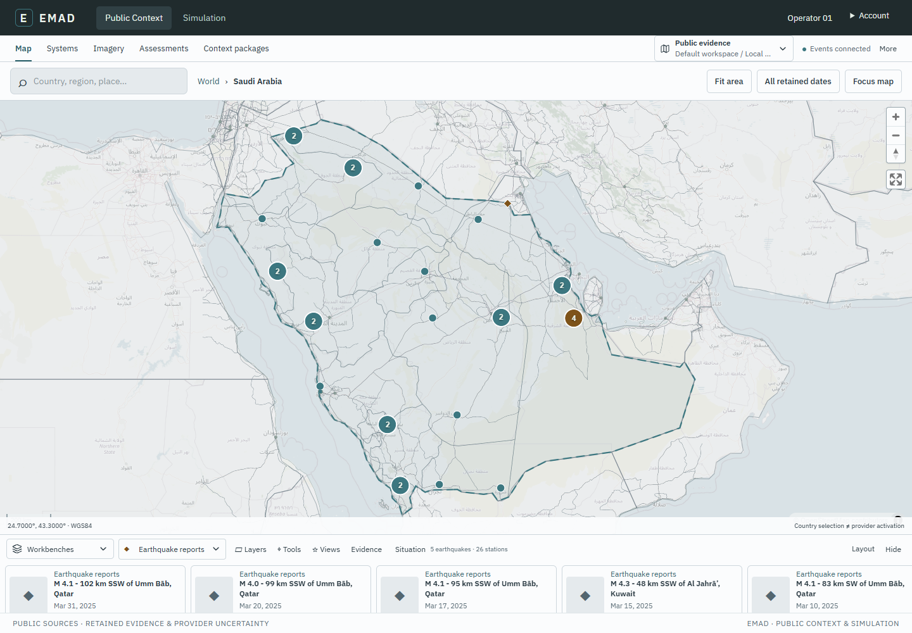
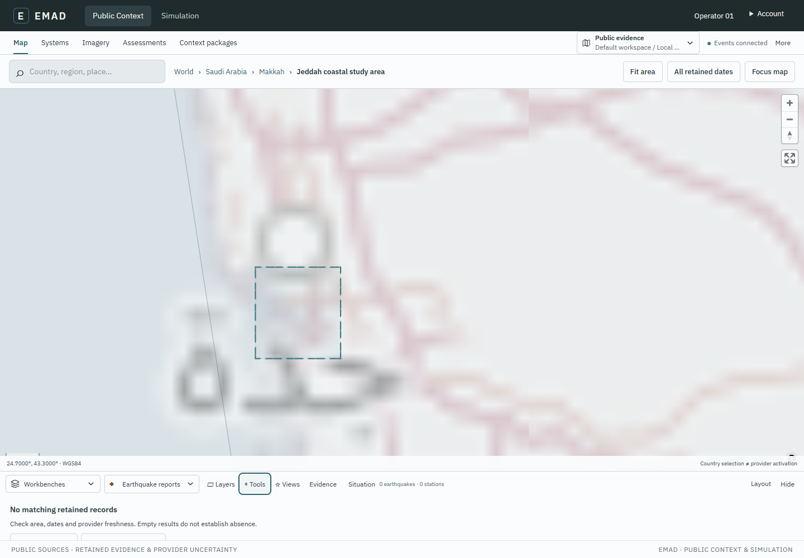
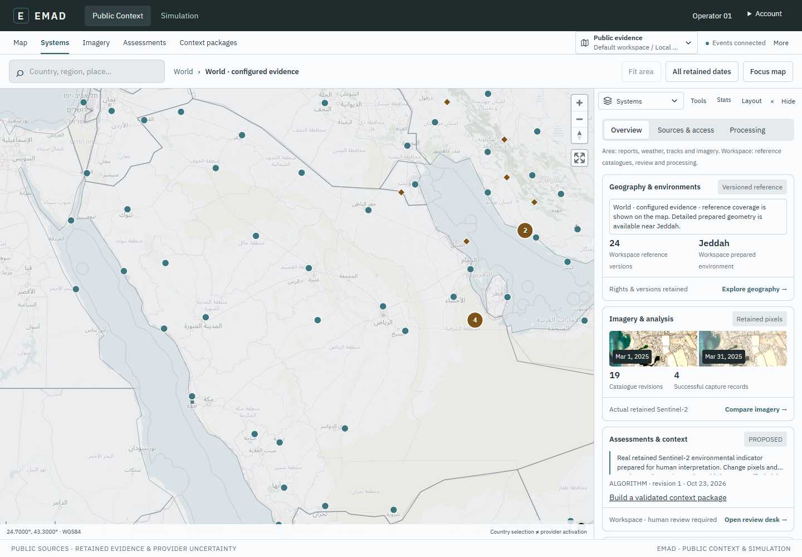
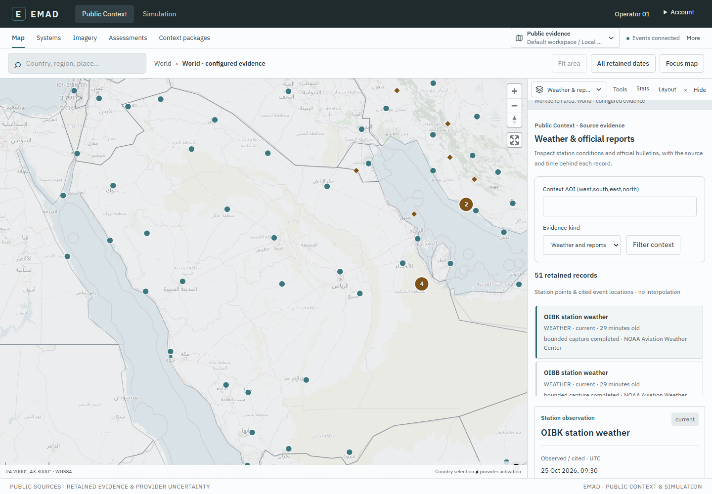
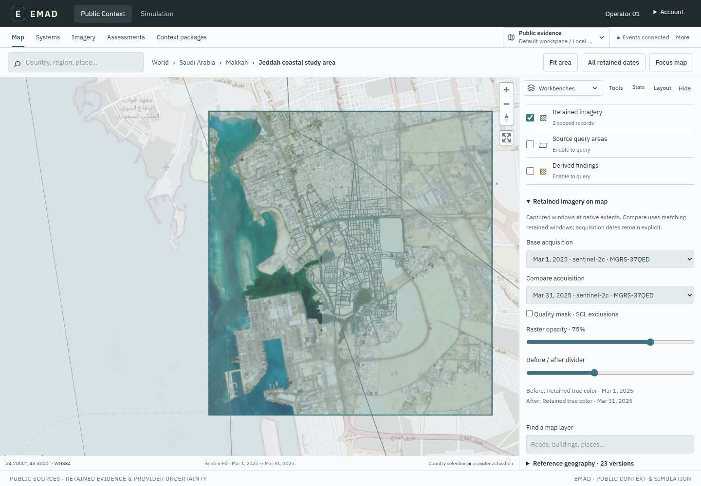
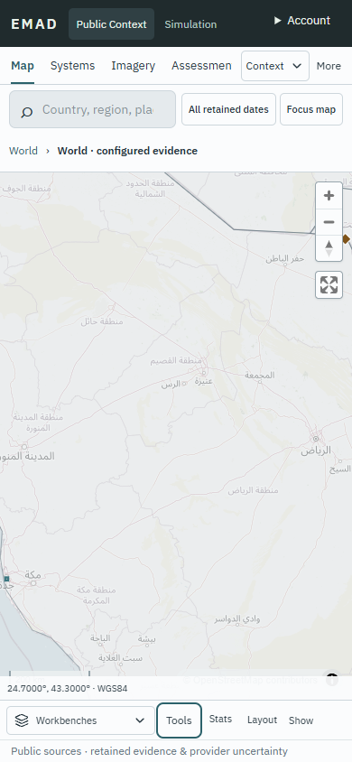
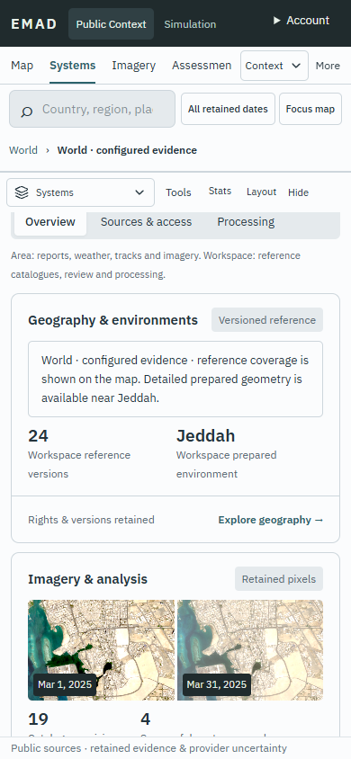
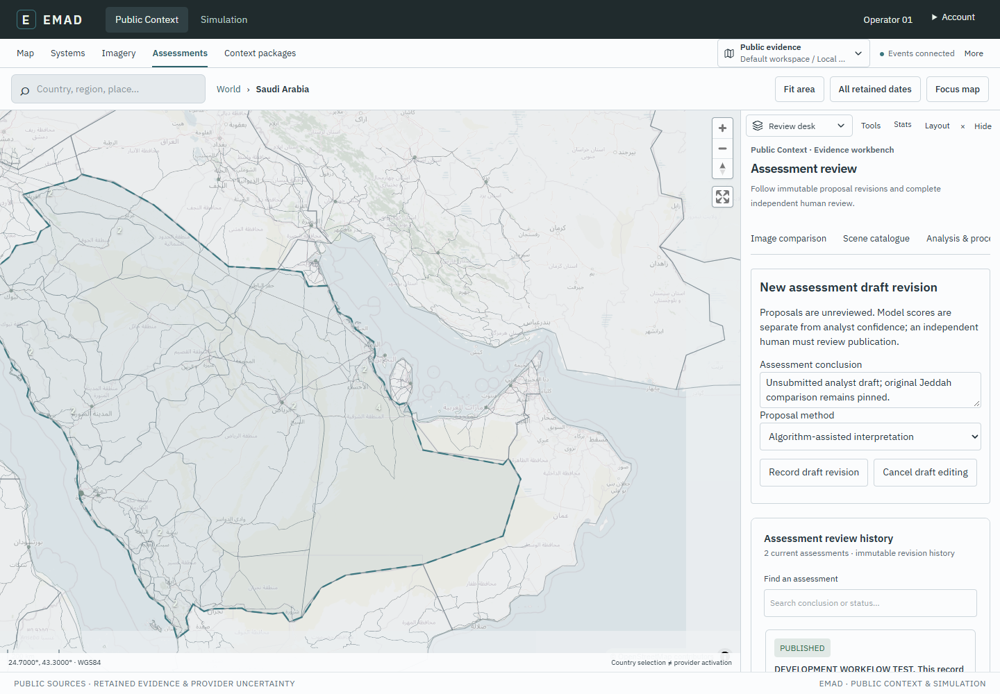
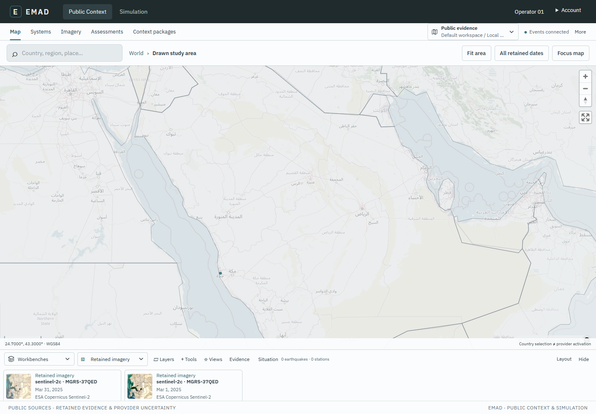
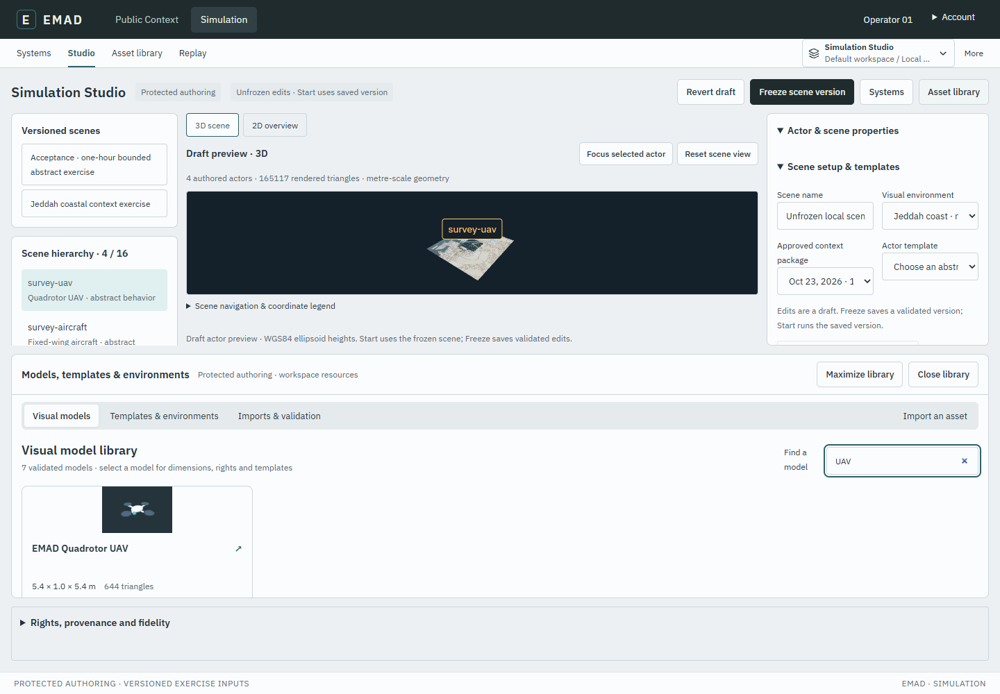

EMAD · live installation evidence · 24 October 2026
Captured from the persistent application with the issued development profiles. These are implemented workflows. Provider evidence, dated imagery, analyst drafts and protected authoring remain distinguishable.

The selected Saudi polygon scopes the counts and features. Preview selection does not turn other layers off.

The bounded prepared environment is a study area, not a municipal boundary.

The shared dock has independent scrolling, bottom/side layouts, collapse and full-workspace expansion.

The same live weather workflow is hosted in the map, including exact source records and history.

March 1 and March 31, 2025. The comparison draws only matching retained windows at their own geographic extent.
Amber identifies excluded pixels; transparent areas retain the eligible RGB. SCL is a classification, not a verified cloud observation.

Controls and layer visibility remain available on a 390px screen.

The actual six-domain grid uses the shared expanded workbench.

Changing tools or geography does not rewrite an unsaved assessment or its frozen comparison.

PostGIS creates a bounded geodesic context buffer. It does not assert administrative or maritime jurisdiction.

Real validated model geometry, search and admission tools; the unfrozen scene draft survives closing and reopening the library.